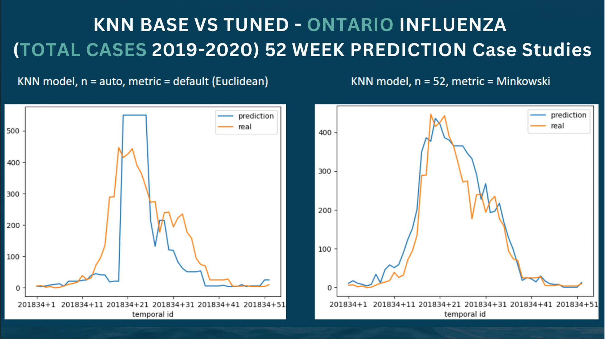
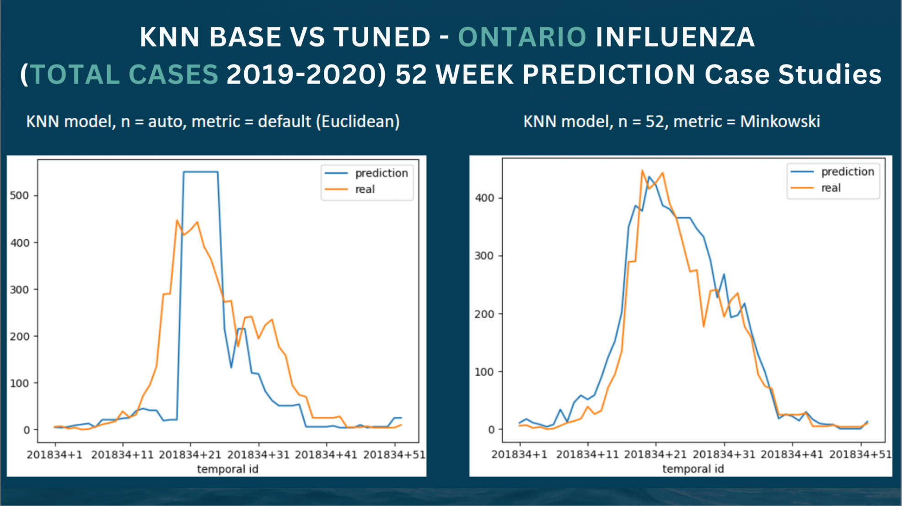

Accomplishments
During school I was given the opportunity to work on a machine learning project analyzing canadian covid and influenza data. The program utilized a package called STPredict that utilizies algorithems such as KNN and Neurel networks. By the end of the project the program was able to predict covid and influenza cases by provice accross canada with only a 5-15% error and is currently in the process of becoming my first publication. I have also taken on projects utilizing computer vision and machine learning to make a program capable of playing pokemon crystal to search for shiny pokemon and record the time, amount of encounters, identify and count number of each none shiny pokemon, and the number of shinies found.

 
Link to STPredict

Link to STPredict